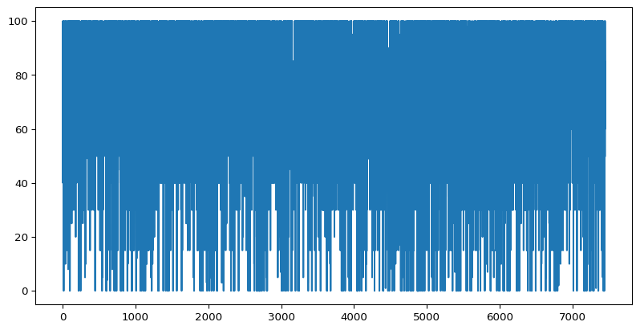
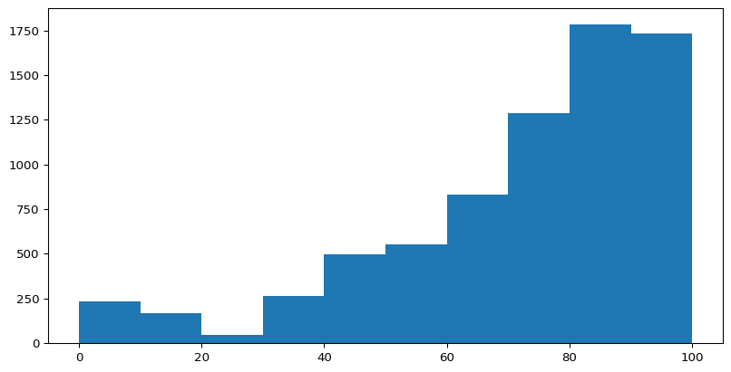
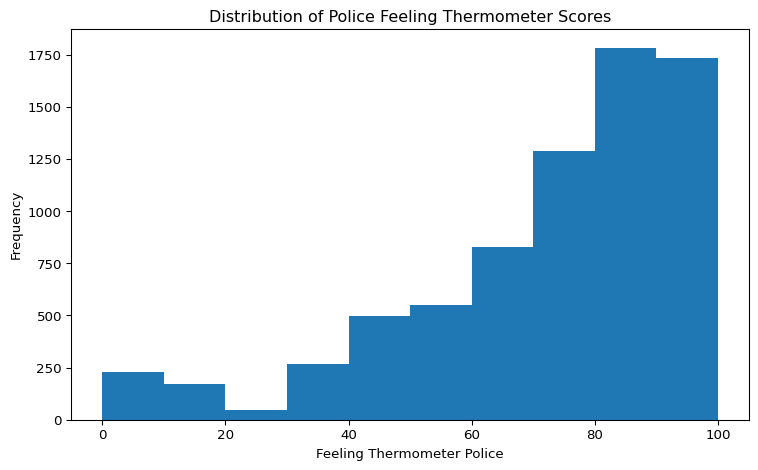

Monday: Intro and Coding Basics
Tuesday: Basics Continued and Control Flow
Wednesday: Object Oriented Programming and Functions
Today: Arrays, Data Analysis and APIs
Friday: Web Scraping and Text-as-Data
Write a function that, given a dictionary consisting of policies and their budgets in millions of dollars, constructs a list of the policy names with budgets below $100 million.
Use the following dictionary of policies
Note where the return statements are. In a for loop with print, we might print after number % 6 == 0, but if we did that here it would exit the function before checking whether the number is also divisible by 9!
Write a list comprehension that takes some list of numbers, and subtracts 5 from only the numbers that are divisible by 3.
Suppose we have multiple conditions we want to evaluate. In a for loop we would use if, elif and else, but the syntax is a little different for comprehensions. Check out this more complicated syntax.
policies = ["Public Transit", "Education Funding", "SNAP Expansion", "Defense Procurement", "Reduce Emissions"]
budgets = [10, 50, 175, 850, 20] # in millions of dollars
classifications = [
f"{name}: " + (
"small" if budget < 25
else "medium" if budget < 100
else "large"
)
for name, budget in zip(policies, budgets)
]
print(classifications)['Public Transit: small', 'Education Funding: medium', 'SNAP Expansion: large', 'Defense Procurement: large', 'Reduce Emissions: small']Same data as the conditional-logic example, just in dictionary form.
Same conditional pattern as the list version, but name: value instead of just value. policy_budgets.items() gives us (name, budget) pairs to unpack.
Write a function that, given a dictionary consisting of policies and their budgets in millions, constructs a dictionary of policies with budgets below $100 million. Use a comprehension to accomplish this!
Start with
We can create arrays of arbitrarily many dimensions, although if things are getting very complex we might want to think about other ways to store our data
array([[[ 1, 2, 3],
[ 4, 5, 6]],
[[ 7, 8, 9],
[10, 11, 12]]])Pay close attention to the placement of the brackets. Easy to mess this up!
We’ll work with indexing and slicing multidimensional arrays tomorrow.
Recall yesterday’s 3D array:
Each comma-separated index drills down one axis:
If you want a lower dimensional slice, mix indexing and slicing
Numpy also provides us with efficient ways to generate arrays of random numbers. This is a good thing to know how to do!
Universal Functions perform fast element-wise operations on data in numpy arrays. Similar to how R does fast operations over matrices.
We can make a simple 1d array of the numbers 1-10 like this
If we wanted to take the square root of every element in the array, we can do
Suppose we wanted to compare two arrays and select the maximum value at each index.
There are a ton more universal functions, including useful utility functions like .isnan to check which elements have missing values
Refer to McKinney section 4.3 for a list of the most common/useful universal functions
pandas is the most popular data analysis package in Python. It is not the only option — Polars, which has syntax more similar to the tidyverse, is gaining popularity.
But pandas is still dominant. It is great for loading and cleaning data, as well as basic data analyses. Most advanced analyses packages, including machine learning packages like PyTorch and TensorFlow, build on pandas and numpy.
By convention, we import pandas as pd
A Series is a one-dimensional array-like object containing a sequence of values of the same type and an associated array of data labels, called its index.
A basic Series might look something like this:
We can also access it in array style
You can give your indices meaningful labels
Will 88
Ben 75
Adam 95
Charlie 83
dtype: int64And we can use that index label to extract specific data points
If you have two Series with matching labels, any operation matches by label rather than position:
Even though Alaska and Kansas are in different positions, pandas adds the right values together. Like a SQL or tidyverse join, with the index as the key.
You can also name the index to remind yourself what it represents:
Useful when you’ll later be filtering or merging — the name shows up in error messages and prints.
A data frame is a data object that contains an ordered, named, collection of columns. You can think of this as a dictionary of Series, each sharing the same index.
data = {'state': ['Ohio', 'Ohio', 'Ohio', 'Nevada', 'Nevada', 'Nevada'],
'year': [2000, 2001, 2002, 2001, 2002, 2003],
'pop': [1.5, 1.7, 3.6, 2.4, 2.9, 3.2]}
frame = pd.DataFrame(data)
frame| state | year | pop | |
|---|---|---|---|
| 0 | Ohio | 2000 | 1.5 |
| 1 | Ohio | 2001 | 1.7 |
| 2 | Ohio | 2002 | 3.6 |
| 3 | Nevada | 2001 | 2.4 |
| 4 | Nevada | 2002 | 2.9 |
| 5 | Nevada | 2003 | 3.2 |
The head method displays only the first five rows
tail will do the same, but for the last five rows
We can also look at specific columns
Suppose we want to add a turnout column. Make a Series and assign it to a new column name:
You can also specify which index each entry corresponds to. Missing positions get NaN:
Useful when you have data for some rows but not all, and you want pandas to fill the rest in for you.
Imagine we only want to consider cases with high turnout (above 0.5). Let’s re-append the original turnout data. Then we can take a conditional slice
Notice that the indices are retained from the original DataFrame object.
You can update values using a boolean filter — but watch your syntax:
This zeroes out every column of the matching rows, not just pop. Almost never what you want.
Use .loc to name which column you’re updating:
| state | year | pop | turnout | |
|---|---|---|---|---|
| 0 | Ohio | 2000 | 0.0 | 0.50 |
| 1 | Ohio | 2001 | 0.0 | 0.49 |
| 2 | Ohio | 2002 | 3.6 | 0.51 |
| 3 | Nevada | 2001 | 2.4 | 0.65 |
| 4 | Nevada | 2002 | 2.9 | 0.59 |
| 5 | Nevada | 2003 | 3.2 | 0.60 |
Same boolean filter, but only the pop column gets reassigned.
When you use integers for your Series index, [-1] doesn’t mean “last element” — it tries to find the label -1:
.iloc for positional access.iloc[] always uses positional indexing, regardless of what the index labels look like:
With character indices, [-1] has historically worked as positional, but pandas’s behavior has shifted across versions. Just use .iloc whenever you want positional access — it’s always unambiguous.
Sometimes it’s useful to get some descriptives about our data. We can call .describe() on a dataframe to do that.
If we want the correlation between two columns, we can do the following
Or a covariance matrix between three columns
Most of the time, we won’t be creating our own DataFrame. Instead, we will load data from some other source.
The most common data type you will see is csv, although json and xml are common if you work with text data or APIs, and in the social sciences you will see spss, sav and other bespoke types.
pandas has its own functions for reading all of these — let’s load in some data using read_csv(). I’ll demonstrate in Colab.
It’s a tad different in Colab, where we don’t need to think about the file path, but in general to load data, you need to know where it lives on your machine.
Generically, it looks something like this
As a specific example, I can load
| Unnamed: 0 | ID | state | attend_online | attend_meet | buttons_signs | donate | contact_congr | registered | party | ... | act_ineq | hist_discrim | econ_mobility | tax_rich | aca | vaccines | reg_emissions | background_checks | freetrade | minwage | |
|---|---|---|---|---|---|---|---|---|---|---|---|---|---|---|---|---|---|---|---|---|---|
| 0 | 1 | 200015 | 40.0 | No | No | No | No | No | NaN | 2.0 | ... | Favor a great deal | Agree Strongly | A great deal easier | Oppose | Disapprove | Neutral | Neutral | Disapprove | Approve | Same |
| 1 | 2 | 200022 | 16.0 | Yes | Yes | No | No | No | NaN | 4.0 | ... | Neutral | Disagree Somewhat | A great deal harder | Favor | Disapprove | Neutral | Neutral | Neutral | Neutral | Raised |
| 2 | 3 | 200039 | 51.0 | No | No | Yes | Yes | Yes | NaN | NaN | ... | Favor a moderate amount | Agree Strongly | A little harder | Favor | Approve | Approve | Approve | Approve | Neutral | Raised |
| 3 | 4 | 200046 | 6.0 | No | No | No | No | No | NaN | 2.0 | ... | Favor a moderate amount | Disagree Somewhat | A great deal harder | Favor | Approve | Approve | Approve | Approve | Approve | Same |
| 4 | 5 | 200053 | 8.0 | No | No | No | No | No | NaN | 4.0 | ... | Neutral | Agree somewhat | A great deal harder | Neutral | Neutral | Disapprove | Disapprove | Approve | Disapprove | Eliminated |
5 rows × 36 columns
| Unnamed: 0 | ID | state | registered | party | ft_biden | ft_trump | ft_harris | ft_pence | ft_fauci | ft_scotus | ft_congress | ft_police | ft_science | ft_blm | limit_imports | |
|---|---|---|---|---|---|---|---|---|---|---|---|---|---|---|---|---|
| count | 7453.000000 | 7453.000000 | 7051.000000 | 625.000000 | 3970.000000 | 7375.000000 | 7359.000000 | 7347.000000 | 7362.000000 | 7293.000000 | 7367.000000 | 7355.000000 | 7388.000000 | 7367.000000 | 7344.000000 | 7244.000000 |
| mean | 3727.000000 | 336416.233061 | 28.084527 | 2.352000 | 2.084635 | 53.449220 | 38.258051 | 51.896965 | 45.277234 | 67.916084 | 60.658341 | 44.346975 | 70.574851 | 79.313832 | 53.295615 | 1.444644 |
| std | 2151.640111 | 103653.120687 | 15.736841 | 0.884844 | 1.220424 | 35.814618 | 40.092051 | 37.828472 | 37.295162 | 30.240530 | 21.831983 | 21.720761 | 25.125874 | 20.167552 | 35.431626 | 0.496961 |
| min | 1.000000 | 200015.000000 | 1.000000 | 1.000000 | 1.000000 | 0.000000 | 0.000000 | 0.000000 | 0.000000 | 0.000000 | 0.000000 | 0.000000 | 0.000000 | 0.000000 | 0.000000 | 1.000000 |
| 25% | 1864.000000 | 225427.000000 | 13.000000 | 1.000000 | 1.000000 | 15.000000 | 0.000000 | 10.000000 | 5.000000 | 50.000000 | 50.000000 | 30.000000 | 60.000000 | 70.000000 | 15.000000 | 1.000000 |
| 50% | 3727.000000 | 335416.000000 | 27.000000 | 3.000000 | 2.000000 | 60.000000 | 15.000000 | 60.000000 | 50.000000 | 70.000000 | 60.000000 | 50.000000 | 70.000000 | 85.000000 | 60.000000 | 1.000000 |
| 75% | 5590.000000 | 427865.000000 | 42.000000 | 3.000000 | 4.000000 | 85.000000 | 85.000000 | 85.000000 | 85.000000 | 100.000000 | 75.000000 | 60.000000 | 85.000000 | 100.000000 | 85.000000 | 2.000000 |
| max | 7453.000000 | 535469.000000 | 56.000000 | 3.000000 | 5.000000 | 100.000000 | 100.000000 | 100.000000 | 100.000000 | 100.000000 | 100.000000 | 100.000000 | 100.000000 | 100.000000 | 100.000000 | 2.000000 |
A pattern you’ll use constantly: split your data into groups, compute something per group, recombine. The R equivalent is dplyr::group_by() |> summarise().
| ft_biden | ft_trump | |
|---|---|---|
| party | ||
| 1.0 | 77.805263 | 10.996479 |
| 2.0 | 24.833470 | 73.347826 |
| 4.0 | 54.229102 | 34.037306 |
| 5.0 | 47.575758 | 42.575758 |
Real analyses combine multiple datasets. pd.merge() handles this — its options mirror SQL or dplyr joins.
| state | population_m | gdp_b | |
|---|---|---|---|
| 0 | Ohio | 11.8 | 770 |
| 1 | Nevada | 3.2 | 220 |
Missing values appear as NaN. Three useful methods:
.isna() checks which values are missing.dropna() removes rows with missing values.fillna() fills missing values with something.str accessorWhen you have a column of strings, .str lets you apply string methods to every element at once. Like the string methods you saw on Day 1, but vectorized over the whole column.
.str operations0 False
1 False
2 True
3 True
4 False
Name: aca, dtype: boolna=False tells pandas to treat NaN as False rather than letting it propagate.
.apply() with a lambdaSometimes you need custom logic that no built-in method covers. .apply() runs a function on each element. Pair it with a lambda for one-off functions.
Lambdas are great for short logic. Named functions are better when the logic is complex or used in multiple places.
For row-wise operations (functions that depend on multiple columns), use df.apply(func, axis=1) and access row["col_name"] inside.
We can use matplotlib for all sorts of plotting in python. Analogous (but not quite as good, imo) to ggplot2 in R. I encourage you to mess around with it, using this data, on your time.
The McKinney book has a whole chapter on data visualization, which I recommend for future reading.
As a simple example, we can plot a histogram to see how Americans feel about the police.

(array([ 231., 169., 46., 266., 495., 550., 830., 1286., 1783.,
1732.]),
array([ 0., 10., 20., 30., 40., 50., 60., 70., 80., 90., 100.]),
<BarContainer object of 10 artists>)
We can, of course, make this plot nicer

I find matplotlib to be kind of clunky, particularly compared to ggplot in R. Fortunately, there are some packages that build on matplotlib and improve its functionality.
I would recommend:
Seaborn makes nice plots for a wide range of statistical models, is more aesthetically pleasing
plotly is great for interactive plots (also exists in R)
Since we have been working on Colab, we haven’t needed to install any packages. This is because Colab comes with many common packages already installed (although not always up-to-date).
Still, we might want to install other packages. There are several ways to do this, and many people use package managers such as Anaconda to manage package installation.
Recommendations vary based on your machine and use case, but in general !pip install package will install a package on Colab, and then you load using import
Data (e.g. web pages) lives on servers
Browsers, apps, etc are clients
clients send requests to servers
servers serve the necessary files to the user
The requests library allows us to send requests to servers. This requires us to be working on a machine connected to the internet (obviously).
Let’s see a very simple example
What happens if you run this?
r.text returned the HTML code for the Python webpage, and it contains a ton of information.
style information, including links to CSS files
JavaScript scripts
HTML tags
classes, ids, toggle buttons, etc
navigation bars, sidebars, footers
Go to Wikipedia and load a page on a topic of your interest. What information is actually useful? What information is not worth obtaining?
We want methods for extracting useful, structured, data that we can use in analyses.
To parse an HTML document, we will need a parsing tool
beautifulsoup is a library that will allow us to do so
Or, we need some other method to interact with the server and bypass this mess!
Why APIs?
Application Programming Interfaces (APIs) provide us access to structured data
Design is separate from content (unlike with an HTML file)
We can access the data directly
APIs most commonly return data in the JSON format, or occasionally in the XML format.
To interact with APIs, we need to understand how the data that they return will be structured
JSON (JavaScript Object Notation) files store structured data in a simple(ish) and human readable way.
In Python, we usually use the json module to interact with JSON files.
Very very (very) popular for exchanging data with servers, storing metadata along with data, etc.
JSON files are built on two basic structures:
name: value pairs (becomes a Python dict)Whether a JSON becomes a dict or a list depends on the top-level structure. Most real APIs return one wrapping the other.
Real-world JSON often nests these:
This flexibility is why JSON works for so many use cases — but it’s also why parsing it can sometimes feel like archaeology. Always inspect the structure before trying to extract data.
Notice that this contains a variety of data types, and some nesting. Much more free form/flexible than a .csv
If we want to extract data into a DataFrame
APIs are a very useful way to get data. Many government agencies and other common data sources have public APIs that we can access from Python.
Sometimes you will need a key to access data, particularly if data is sensitive or non-public
When we want to get data from a server, we use a get request to an endpoint — a URL that the server publishes for programmatic access.
Two examples:
Parameters get appended to the URL with ? and &:
?param1=value1¶m2=value2&...
Example — articles containing “america”, sorted by publication date:
https://www.example.com/api/posts?query=america&sort=newest&types=articles
Possible parameters vary by API — always check the docs.
Most APIs return JSON. Some return XML or other formats; a few let you specify with a parameter like &format=json.
JSON is much easier to work with in Python — if you have the choice, take it.
check the documentation at https://en.wikipedia.org/w/api.php
Find information on the Wikipedia page for “Jimmy Carter”
Let’s do a quick example together, returning the number of other language versions
We can also use requests to make our code more readable, and avoid typos and formatting mistakes in the get request.
The structure of d mirrors the JSON. Now we just walk in to grab the value we want.
Modify the parameters to request page views instead of language link count, and extract the data.
continue tokenAPIs limit how much data a single query returns. When there’s more to fetch, the response includes a continue key telling you where to pick up.
We’ll grab one batch first, see what comes back, then loop in the next slide.
If data has a "continue" key, there’s more to fetch.
all_members = []
while True:
resp = requests.get(API_URL, params=params)
resp.raise_for_status()
data = resp.json()
batch = data["query"]["categorymembers"]
all_members.extend(batch)
print(f"Fetched {len(batch)} (total: {len(all_members)})")
if "continue" in data:
params.update(data["continue"])
else:
break
print(f"Done! Total: {len(all_members)}")all_membersdata["continue"] exists, merge those parameters into params and loop again — Wikipedia tells us where to resume via that fielddata["continue"] is gone, break exits the loopMany APIs (FRED, Census, OpenSecrets, OpenAI, …) require a personal API key to access data.
We need a way to use the key without it appearing in the notebook.
Click the key icon in the left sidebar. Add a new secret — name it FRED_API_KEY, paste the key as the value, and toggle notebook access.
The key never appears in the notebook. If you share the notebook, the recipient sees userdata.get("FRED_API_KEY") and has to set up their own secret to run it.
Two common approaches:
FRED_API_KEY=... in your shell, read with os.environ.env file — store keys in a file, load with python-dotenvEither way, add .env and any key files to .gitignore so they never get committed.
In a file called .env (next to your script):
FRED_API_KEY=abc123...Then in Python:
os.environ["..."] raises a clear KeyError if the variable isn’t set, so you find out immediately if your setup is wrong.
It happens. Step-by-step fix:
git filter-repo) or accept the key needs to stay revokedTreat any leaked key as compromised forever. Rotation is cheap; reputational fallout from data charges or abuse is not.
FRED (Federal Reserve Economic Data) is one of the most useful APIs for economic data. Register for a free key at https://fred.stlouisfed.org/docs/api/api_key.html.
Same pattern as Wikipedia: endpoint, params dict, parse JSON, convert to DataFrame.
pd.to_datetime and pd.to_numeric convert the string columns FRED returns into proper datetime and numeric types — much easier to plot or aggregate. Whenever an API returns dates as strings, this is the first thing to do.
Tomorrow — Web scraping with BeautifulSoup, plus text-as-data basics
Questions: come to office hours (10 AM – 12 PM daily), or email me
Recommended reading: links to web-scraping and text-as-data resources will be posted on Canvas
Slides will be posted after class on Canvas and at will-horne.github.io/icpsr-2026
Social Science Data and APIs
While I can imagine fascinating research projects using this Wikipedia data, such as looking at revision histories to controversial topics, or edits in response to political shifts, most of the time we are looking to grab more traditional data from APIs.
Let’s take a look at the API for the OECD by going to
https://data-explorer.oecd.org
Formatting info is here:
https://www.oecd.org/en/data/insights/data-explainers/2024/09/api.html